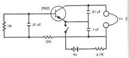

Kitsilano is an oscillator circuit based on two NPN transistors and a single capacitor. It is so named because it is the most interesting circuit (really, the only significant circuit) that I designed while I was living in the Kitsilano neighbourhood of Vancouver, British Columbia, Canada. Its design was a byproduct of a quest which I have since recognized as futile, and abandoned: the design of a single-transistor, inductor-less oscillator. The pursuit itself was somewhat interesting though, so I'll tell you about it in the next section. In the third section, I'll describe the Kitsilano oscillator itself.

Figure 1. A single-transistor (and apparently inductor-less) oscillator. (From Sessions 1975).
The notion of a single-transistor oscillator, built without an inductor, tantalized me for a while after I came across what looked like such a circuit in a book of somewhat older circuits that I checked out from the public library[1]. It is shown in Figure 1. It clearly contains only one transistor and no coils, and the caption claims that the tone it produces, though not loud, is adequate for keying (that is, Morse code) practice. Further, the circuit is organized in a way that coincides with my understanding of how one might go about eliminating the inductor from a Colpitts oscillator: by replacing it with a capacitor and a resistor in parallel and in series with another resistor, an arrangement which can be thought of as a very rough equivalent to an inductor.
However, every attempt I made at building it failed to produce any results. It was not until much later that I came up with a plausible theory for why it didn't work. The audio output in this circuit was shown as a pair of headphones labelled "Hi-Z". This means "high-resistance", and indicates old-style piezoelectric headphones rather than the more modern magnetic-coil speakers. What took me so long to realize is that piezoelectric elements are crystals, and crystals provide inductance (which is why they can be used in crystal oscillators!) In this circuit, the headphones are apparently a critical component which acts as an inductor in the oscillator. I haven't been able to hunt down a genuine crystal-element earpiece yet, so I haven't been able to test this theory, but it's the best idea I've come up with yet for why it doesn't work without one.
Figure 2. The 'Kitsilano' Oscillator Circuit.
Having given up on a single-transistor, inductorless oscillator, and discovering in other library books several single-transistor, one-inductor designs (such as the Colpitts oscillator), I concentrated my efforts on designing a two-transistor, no-inductor oscillator.
I had encountered several two-transistor designs previously. One is the "multistable multivibrator", which uses two transistors of the same type, and two capacitors. Each transistor-capacitor pair acts as a timer which triggers the other pair when it has discharged. Another design involves only a single capacitor, but two transistors of complimentary type (NPN and PNP.) Many circuits based on both of these oscillator designs can be found in Mims[2].
Well, what I wanted was an oscillator built from two transistors of the same type, but incorporating only one capacitor. This effort resulted in Kitsilano.
The theory of Kitsilano's design was adapted from a fairly standard oscillator design that utilizes two CMOS inverters. This is usually implemented with half of a 4001 chip (tying the inputs of each NAND together to form an inverter.). One of the inverters is fed its own output through an RC circuit, and the other inverter is used to stabilize the feedback and "square off" the output. Circuits incorporating this oscillator design can also be found in Mims[2].
(In fact, it's not required that such an oscillator be constructed from CMOS gates. This figure shows a circuit along the same lines that I built from LSTTL NOR gates, driving a series-resistor-less LED via a transistor. Measuring the current usage shows why CMOS is preferable: LSTTL uses a lot.)
Kitsilano uses the fact that an inverter can be built with a single transistor to replace the two CMOS inverters with two transistors of the same type. The remainder of the circuit is officially a hack, since it was designed "by dint of sheer building." The circuit is depicted in Figure 2.
For the construction itself, I chose two 2N4124 transistors — they're NPN and they're about as cheap as they come. The requisite task of an oscillator, as far as I'm concerned, is to blink an LED, so I chose C1 large enough to make this action visible to the unaided eye.
R1 was not originally part of the circuit: there was no connection between Q1's base and +5V. This oscillator would oscillate sometimes, while at other times would fail to oscillate. I eventually discovered that it was very sensitive to where my hands were placed above or around the circuit, so I added to the high-resistance path to +5V to make sure there was always some voltage at Q1's base, making its behaviour more stable.
D1 was originally a resistor (I forget the ohmage.) The circuit worked fine with a resistor there, but I wanted something stranger, so I experimented with replacing it with a diode. This worked too, although I cannot quite tell you why (does the voltage drop across the diode serve the same function as the resistance?) so I kept it in.
{kind=link}